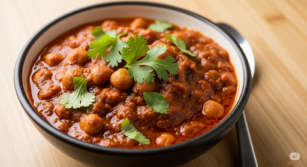

Home
Chana Masala

Description
Indian chickpea curry features a hearty mixture of chickpeas, tomatoes, onion, green chile, and indian spices.
Ingredients
- 1 onion, chopped
- 1 tomato,chopped
- 1 inch piece fresh ginger, minced
- 4 cloves of garlic
- 1 green chile pepper, seeded and chopped
- 2 tablespoons of olive oil
- bay leaf
- chili powder, coriander powder, garam masala (1 teaspoon each)
- 1/2 teaspoon turmeric powder
- salt to taste
- 1 cup of chickpeas
- coriander leaves
Steps
- Grind onion, tomato, ginger, garlic, and chile pepper together in a food processor into a paste.
- Heat oil in large skillet over medium heat. Fry bay leaf in hot in until fragrant, about 30 seconds. Pour the paste into the skillet and cook until the oil beings to separate from the mixture and is golden brown in color, 2 to 3 minutes.
Season the mixture with chile powder, coriander powder, garam masala, turmeric powder, and salt; cook and stir until very hot, 2 to 3 minutes.
- Stir just enough water into the mixture to get a thick sauce; bring to a boil and stir boiled chickpeas into the sauce. Reduce heat to medium and cook until the chickpeas are heated through, 5 to 7 minutes. Garnish with coriander.